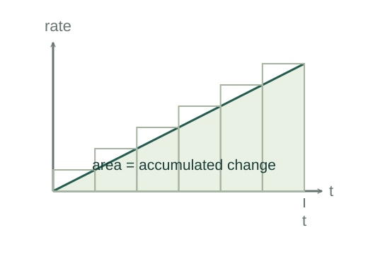

Why an integral accumulates a rate
A rate describes change per unit input. Multiplying a nearly constant rate by a short interval gives a small change. Adding those changes and taking a fine-interval limit gives the integral.
What the symbols mean
F(t): an accumulated quantity; r(t) = F′(t): its rate; dt: infinitesimal input interval. The same mathematics applies to time, position or other variables.
When this applies
For this elementary construction take a continuous rate over a finite interval, so its accumulated function has the stated derivative.
Developing the argument

Approximate with short intervals
Divide [a,b] into intervals Δti. Over a short interval, rate changes little, so its contribution is approximately r(ti)Δti.
Take the partition limit
As the largest interval width approaches zero, the sum converges to the definite integral. Negative rates contribute negative changes, just as negative velocity contributes negative displacement.
Show the accumulated function has the given rate
Define G(t) = ∫ₐᵗ r(s)ds. Its change from t to t + h is the integral over only that short added interval. Dividing by h gives the average rate there, tending to r(t) by continuity.
Recover the initial value
If F′ and G′ are equal, F − G has zero derivative and is constant. At t = a, G(a) = 0, so that constant is F(a). This proves the fundamental accumulation identity.
Explain the recurring factor one half
For a linearly increasing rate r(t) = bt, accumulated change is the triangle area under the rate graph. An antiderivative confirms it because d(bt²/2)/dt = bt.
A worked example
If velocity is v(t) = 2t m/s with t measured in seconds, displacement from 0 to 3 s is the triangular area ½ × 3 × 6 = 9 m.
Derivation behind this calculation ↗A point to keep straight
An indefinite integral includes an arbitrary constant. A definite integral between endpoints is a signed accumulated change, not always a positive geometric area.
Check the assumptions and derivation ↗